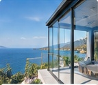

Katlanır cam balkon sistemleriyle açık alanlarınızı ihtiyaç duyduğunuzda korunaklı, ferah ve kullanışlı yaşam alanlarına dönüştürün.
Katlanır sistem cam balkon, balkon ve teras gibi alanları mevsim koşullarına göre daha verimli kullanmanıza yardımcı olur. Kanatların katlanarak açılması, alanın ihtiyaca göre açık veya kapalı kullanılmasını sağlar.
Uygulama öncesinde alan ölçüleri ve kullanım beklentileri değerlendirilir; projeye uygun sistem ve cam seçenekleri belirlenir.

Her aşamada ne yapılacağını önceden bilmeniz için süreci açık ve anlaşılır şekilde sunuyoruz.


Galeriyi yatay kaydırarak farklı uygulama görsellerini inceleyebilirsiniz.
Not: Bu taslakta kullanılan görseller temsilî stok görsellerdir; gerçek Katre Cam uygulaması olarak sunulmamalıdır.